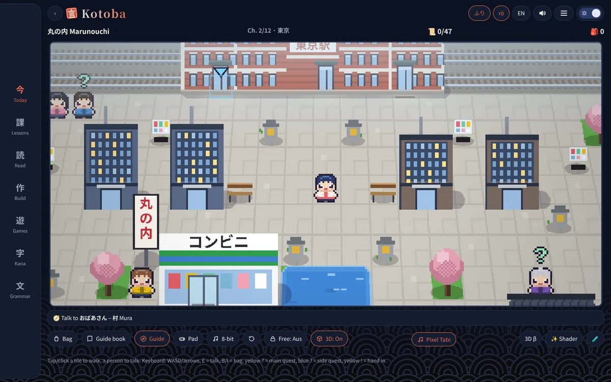
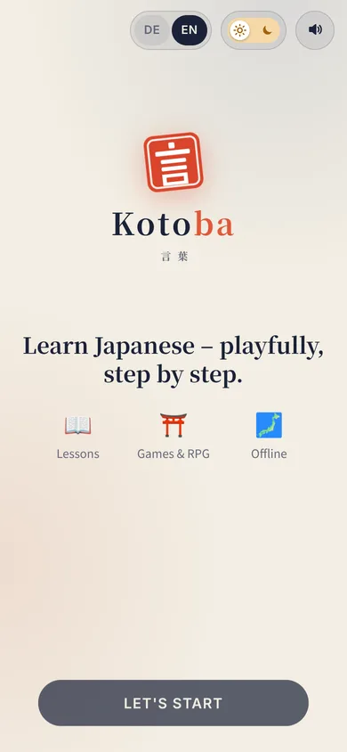
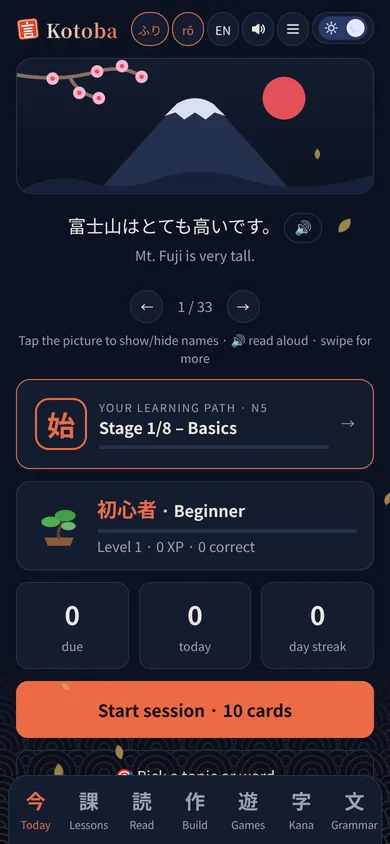

Kotoba 言葉
Learn Japanese – playfully, step by step. Lessons and a learning path to JLPT N5, reading with furigana, kana & kanji, games, an RPG across Japan and calm chill modes.
- Works offline · no ads · no tracking
- English & German interface, read-aloud
- Install on your phone or as a native app
- Web
- iPhone & iPad
- Android
- macOS
- Windows
- Linux


